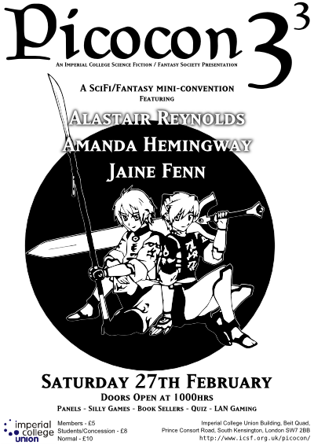
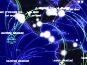
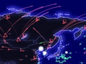

Picocon 33

Alastair Reynolds, born 1966 is most famous for the 5 novels and multitude of short stories from the Revelation Space universe. However, this is not the sole setting which he uses; there are other, stand-alone novels, including a new one due for publication in March 2010, Terminal World, self-described as "SF, it's weird, and it doesn't have spaceships".
Alastair can be found online at http://www.alastairreynolds.com.
Amanda Hemingway, aka Jemma Harvey, aka Jan Siegal, born 1955 is a Writer. She prefers 'writer' to author: no-one knows why, especially not herself! The dry wit running through her fantasy works is a wonderful accompaniment to the suspense and imagination inherent in them. Her latest works, the Sangreal series, makes good use of a combination of very dark elements; time travel and alternate universes combine as the Writer explores worlds, people and sacrifice, provoking and intriguing her characters and readers alike.
Amanda can be found online at http://www.amandahemingway.co.uk/.
Jaine Fenn was born. She then grew up and (after a lot of trying) became an author, with two novels many short stories in print. In terms of her work, there's a great deal more to say— but I wouldn't want to spoil things for you. Suffice to say that they are set seven thousand years in the future, humanity's greatest enemy may be closer to home than it thinks and nothing is as it first appears. "Principles of Angels" left me gripped from start to finish and "Consorts of Heaven" is, if anything, better.
Jaine can be found online at http://www.jainefenn.com/.
This year, a few new things were tried out at Picocon.
Following a request from one of our guests of honour, a short book signing was scheduled in the lunch break. Contact with publishers regarding books for sale at this signing lead to Picocon 33 selling the very first copies of the British Edition of Alistar Reynold's "Terminal World", roughly two weeks ahead of public release.
Another new venture was an extension of the LAN gaming to include a tournament, which was played on DEFCON. The website publicity extract is below.


This year, Picocon will be host to a LAN gaming tournament. The game this year will be the award-winning DEFCON, developed by those lovely chaps at Introversion who have have generously donated some prizes to award to our winners!